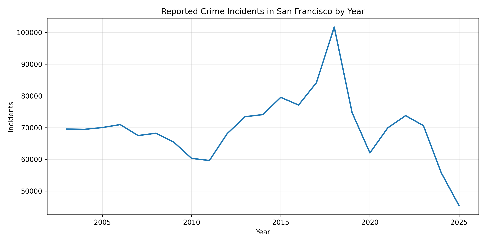

1. A citywide trend can hide a more complicated story
Looking at total incidents over time gives a useful overview, but it can also flatten important differences. A city can appear more stable than it really is if some crime categories are rising while others are falling.

2. Crime is concentrated, not evenly spread
The next step is to move from time to geography. Even if citywide totals look moderate, the map can reveal whether incidents are concentrated in specific parts of San Francisco.
3. Different categories move differently
The final figure adds some reader freedom, but within a guided structure. The story remains author-driven because the page explains what to look for and why the comparison matters.
Try comparing categories across years. One of the most important lessons from this dataset is that “crime” is not one single thing. Different categories can follow very different paths.
Conclusion
This dataset shows why a simple “crime is up” or “crime is down” framing is not enough. Recorded incidents vary over time, cluster geographically, and differ by category. Just as importantly, police data reflects reporting and enforcement practices as well as underlying behavior, so patterns should be interpreted with care.
References
[Add any outside sources here if you use them.]